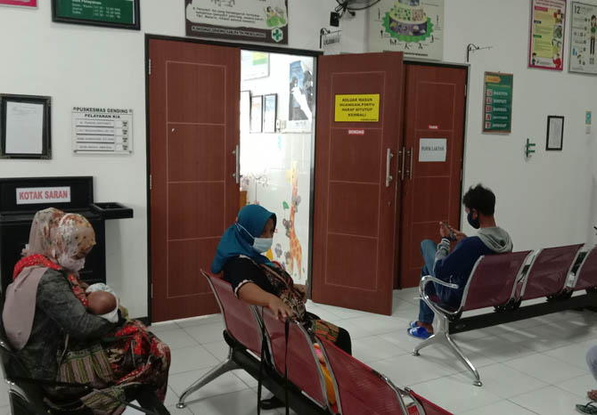
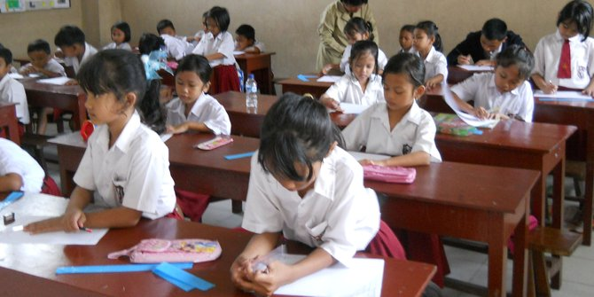

Fasilitas

Posyandu
Kegiatan Posyandu yang rutin dilakukan satu minggu sekali- Program kesehatan ibu hamil
- Program kesehatan anak
- Keluarga Berencana (KB)
- Imunisasi
- Pemantauan status gizi

Puskesmas
Kami Melayani- Layanan Pemeriksaan umum.
- Layanan Kesehatan Gigi dan Mulut
- ayanan KIA - KB
- Layanan Farmasi
- Layanan Laboratorium
